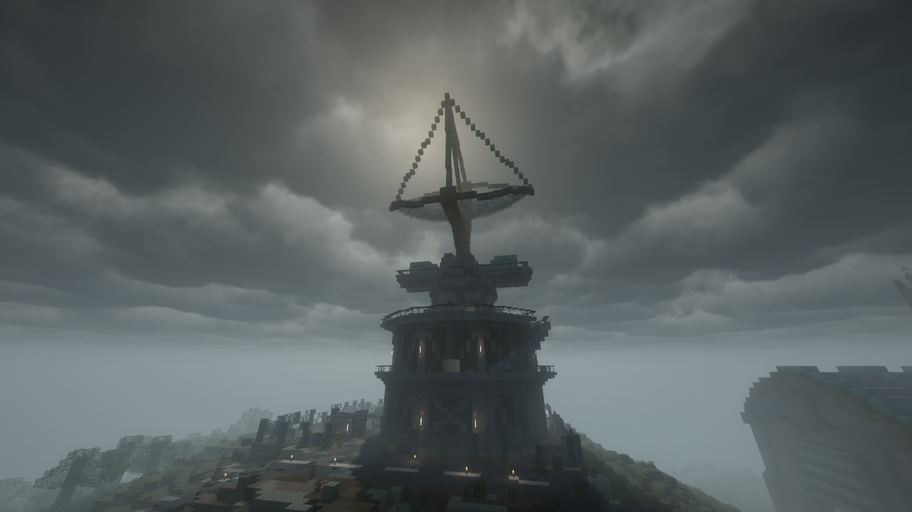

Vanilla Survival - gemeinsam bauen, ohne Gimmicks.
minxserver.duckdns.org
Beide Welten in einem Profil. Klick auf einen Spieler öffnet sein Dashboard.
Tödlich heißt: gefährlich für andere Spieler. Punkte = 45 % PvP-Dominanz (PvP-Kills vs. PvP-Tode) + 35 % Kampfkraft (verursachter Schaden pro Stunde) + 20 % Überleben (Tode pro Stunde). Farm-Mob-Kills zählen nicht. Wer wenig gespielt hat, nähert sich dem Server-Durchschnitt an - je länger jemand spielt, desto mehr zählen die eigenen Werte. 100 P = tödlichster Spieler.
Was im Hintergrund läuft - bewusst knapp gehalten.
Kurz und klar.
Der Host und die Welt dahinter.